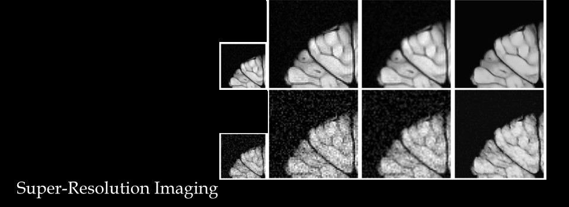
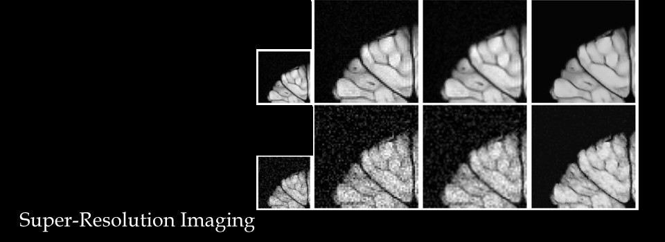

Selected Publications
1-Landmark-based image registration of the breast
Breast magnetic resonance imaging (MRI) is frequently performed prior to breast conserving surgery in order to assess
the location and extent of the lesion. It is, however, difficult for the surgeon to use the MR images to guide the
surgery. While pre-surgical MRI is typically performed in the prone position, surgery is performed in the supine
position. The breast undergoes significant distortion as a result. To overcome this restriction, supine breast MRI
has been recently proposed. In most clinical MR scanners the arm of the patient has to be placed parallel to the
body, whereas the arm is placed in an outstretched position during surgery. The highly deformable nature of the breast
tissue and the computational time constraint are the main challenges in solving this inverse problem. We have examined
a thin-plate spline registration scheme to match these two configurations using the positional information of surface
markers [J2, J4, J5].
2-Intensity based approaches for medical image registration
We developed a number of new methodologies for automated motion correction of medical images using their intensity
information. Specifically, we have been working on registration algorithms aimed at motion correction of dynamic
contrast-enhanced magnetic resonance images (DCE-MRI). In [C5] we suggested an extension of the well-known Demons
image registration algorithm. Our extension allows intensity changes in images due to contrast enhancement as opposed
to the Demons algorithm. This extension provides a simple registration algorithm for DCE-MRI. Furthermore, in [C4]
we proposed a coupled PDE-based approach to optimize the combined image registration and intensity correction expression
in an optimize-then-discretize framework. More recently in [J1] we have presented an efficient multi-level Gauss-Newton
approach in a discretize-then-optimize paradigm. The simulated data for validation in this article was prepared by
Anthony Lausch (MSc Student, co-author). Lausch’s work has also led to [C1]. In addition, we assisted Melissa Hill
(PhD student at Sunnybrook) in registration of contrast-enhanced digital mammography images. The work was a collaboration
with a group of experts in digital mammography that led to [J3] in Medical Physics.
3-Image zooming and super-resolution
Recovery of a high-resolution image from a single image is called image zooming and from a set of distorted images
is known as super-resolution. Image zooming and super-resolution are the other ill-posed inverse problems that we
have been investigating during the course of our research. In “Solving the inverse problem of image zooming using
‘self-examples’” [C13] we presented a recipe to address image zooming problem based on the non-local (NL) self-similarities
of an image across scales. This publication received a great deal of attention and citations. The method of “self-examples”
combined the ideas of fractal-zoom with the newly developed NL-means denoising algorithm which is demonstrated to
perform as a leading classical denoising method. The effectiveness of our method lies in the cross-scale regularity
properties of natural images which has been considered in [C11]. Furthermore, to address the multi-frame super-resolution
problem, we presented an algorithm in [C9] that does not require sub-pixel motion estimation as opposed to the common
existing super-resolution algorithms. It is believed that a combined reconstruction and motion estimation is a key
tool to address the superresolution problem rather than treating the two sub-problems independently. In [C6, C7],
we proposed a coupled multi-frame super-resolution approach with a non-parametric motion model. A coupled partial
differential equation (PDE)-based approach was used to solve the optimization problem. Two variants of this work
were also presented in [C2, C10].
4-Inverse problems involving self-similarity
Self-similarity is the basis of fractal image coding which was originally developed by Michael Barnsley, the influential
author of Fractals Everywhere. We revisited the concept of fractal-based methods and derived a necessary and sufficient
condition for the contractivity of the fractal transform operator [J6]. In [J7] prepared in collaboration with Barnsley
and coworkers we proposed more generalized fractal transform operators in the context of measure valued images. To
offer flexibility in inclusion of a-priori image constraints at the decoding stage we proposed “Fractal image coding
as projections onto convex sets (POCS)” [C14] and “Regularization Schemes involving Self-similarity in Imaging Inverse
Problems” [C12]. These papers provide tools to address the ill-posed inverse problem of missing fractal codes. We
summarized the activity in the area of self-similarity in imaging for the past 20 years in two invited presentations
[C3, C8].